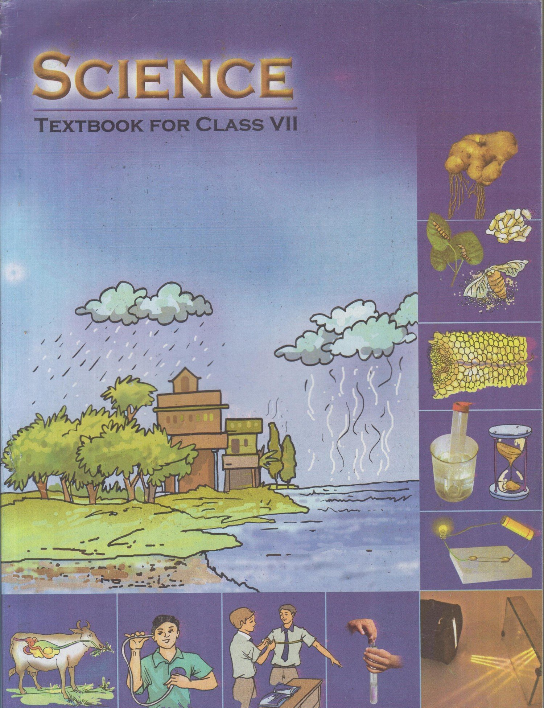

Science 7 tuto
Science 7 tuto
------------------------------------------------------------------------------------------------------------------------------------------------------------------------------------------------------------------------------------------------------------------------------------------
The National Council of Educational Research and Training (NCERT) publishes Science textbooks for Class 7.
The NCERT Class 7th Science textbooks are well known for it’s updated and thoroughly revised syllabus.
The NCERT Science Books are based on the latest exam pattern and CBSE syllabus. NCERT has a good image
when it comes to publishing the study materials for the students. NCERT keeps on updating the Science
books with the help of the latest question papers of each year. The Class 7 Science books of NCERT are
very well known for its presentation. The use of these books is not only suitable for studying the regular
syllabus of various boards but it can also be useful for the candidates appearing for various competitive exams.
We hope that this detailed article on NCERT Class 7 Science Books helps
you in your preparation to score good marks. Refer CBSE Class 7 Science
Previous Year Questions to know pattern of questions asks in the exam.
NCERT Class 7 Science Books are provided in PDF form so that students can access it at anytime anywhere
NCERT BOOK CHAPTERS OF Science :--
Introduction + starting of book
We hope the given NCERT Solutions for Class 7 Science
(NOTE : PDF SOURCE = ncertbooks.prashanthellina.com)